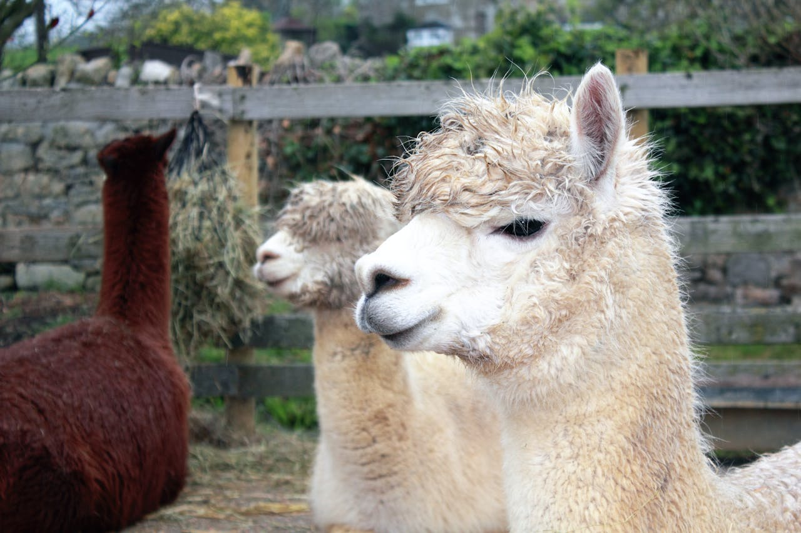
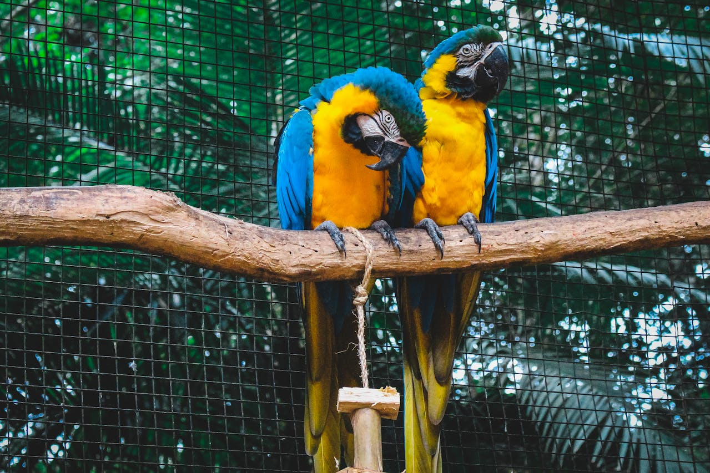
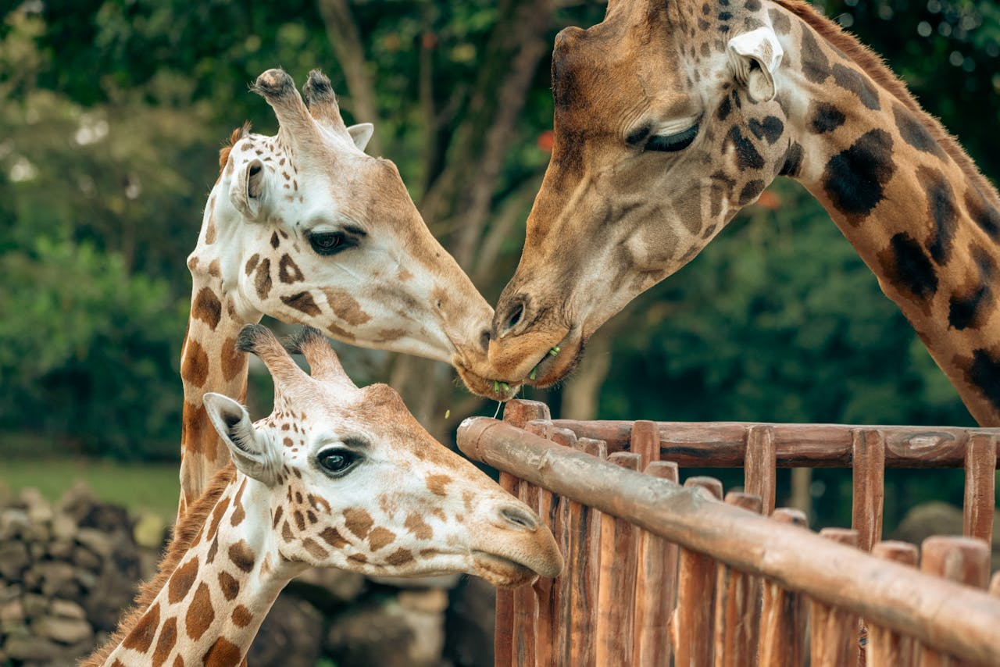
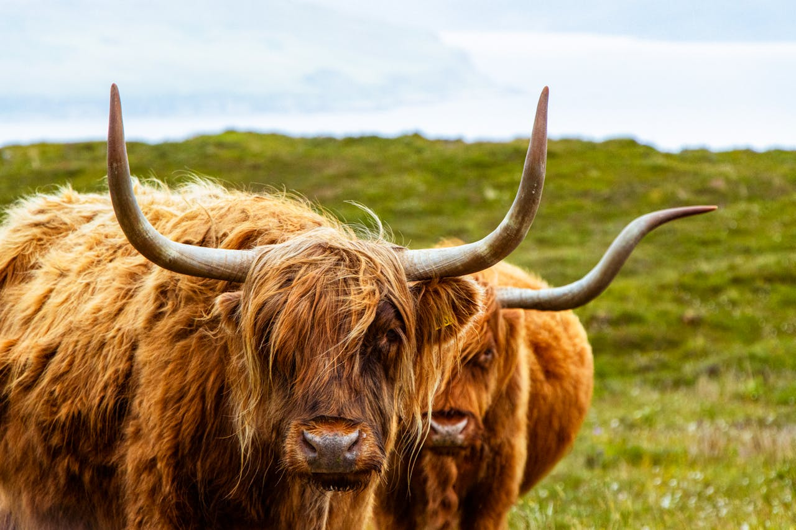
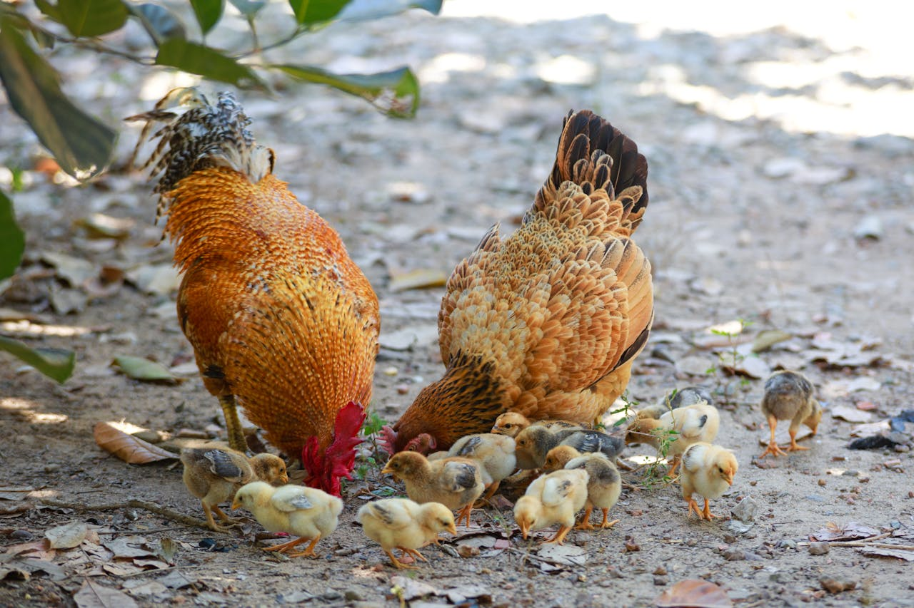
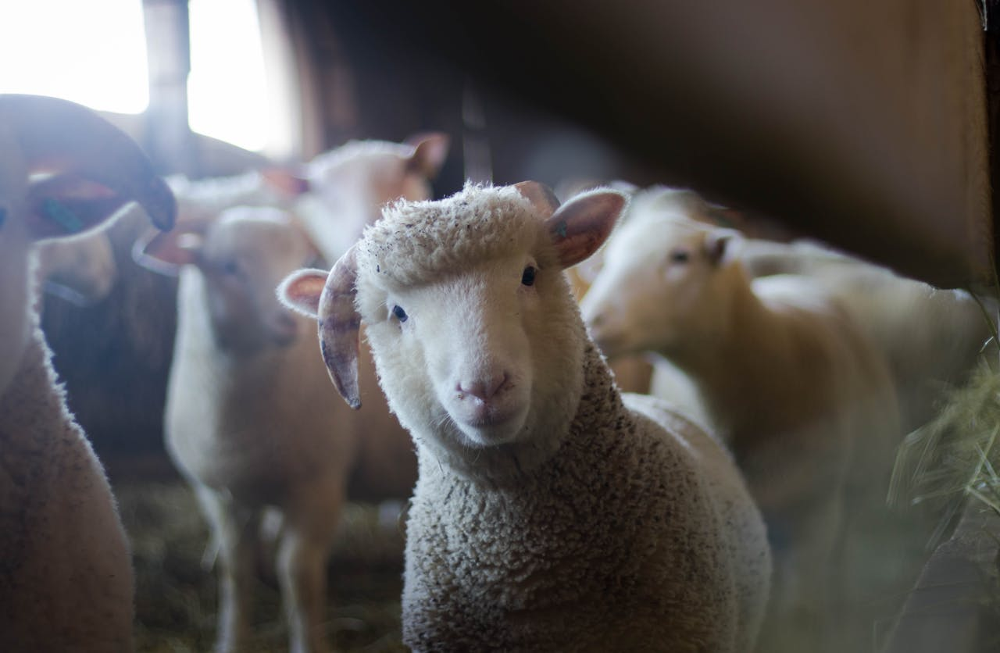

Enjoy our mini zoo, that includes alpacas, sheeps, highland cows, horses, monkies, flamingoes and many more
surprises.

An alpaca is a domesticated South American camelid bred
for its soft, warm, and hypoallergenic fleece, rather than
for meat or milk.

Macaws are a group of New World parrots that are long-tailed
and often colorful, in the tribe Arini. They are popular in aviculture
or as companion parrots, although there are conservation concerns about
several species in the wild.

Sheep or domestic sheep are a domesticated,
ruminant mammal typically kept as livestock. Although the term sheep
can apply to other species in the genus Ovis, in everyday usage it
almost always refers to domesticated sheep.

Highland cows, a Scottish breed known for their long horns
and shaggy, double-layered coats, are one of the world's oldest
registered cattle breeds.

Sheep or domestic sheep are a domesticated,
ruminant mammal typically kept as livestock. Although the term sheep
can apply to other species in the genus Ovis, in everyday usage it
almost always refers to domesticated sheep.

Sheep or domestic sheep are a domesticated,
ruminant mammal typically kept as livestock. Although the term sheep
can apply to other species in the genus Ovis, in everyday usage it
almost always refers to domesticated sheep.